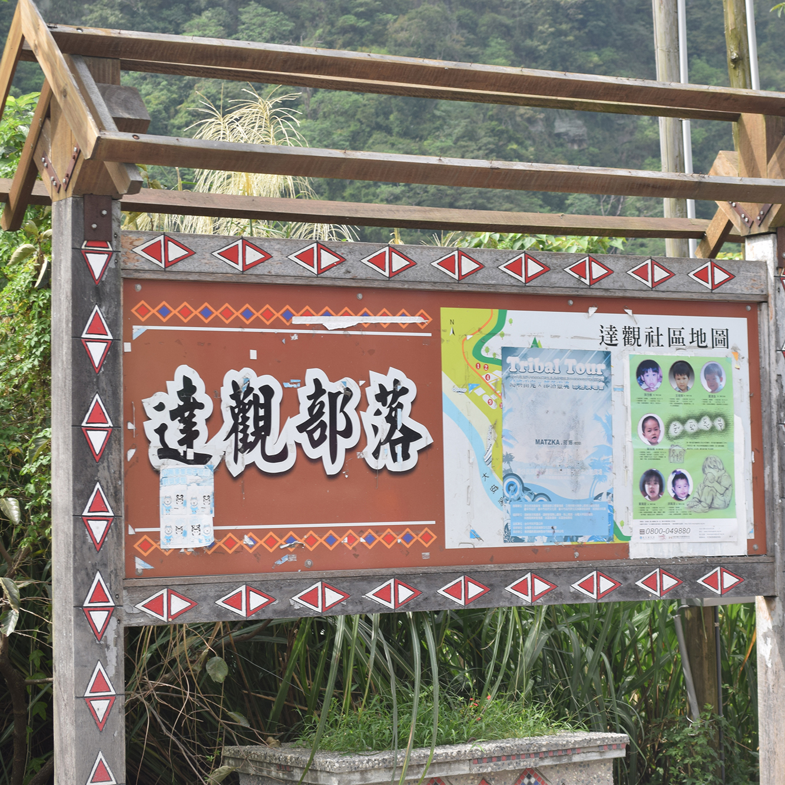

田野調查遊記
Journal in Daguan
10月29日，一個特別的日子，
雖然頂著艷陽高照，
卻曬不乾我們的熱情。
再忙還是要道聲你好
才剛到達達觀部落，就感受到泰雅族人滿滿的活力！ 有人幫忙烤香腸，有人幫忙為招呼客人，雖然忙碌， 但大家還是不忘輕道一聲「lokah su ga?」， 這是泰雅族人彼此問候的方式。
整個達觀部落在太陽的照耀下，被渲染成了漂亮的金黃色， 被橙黃甜柿包圍的人們，笑得合不攏嘴， 這裡的一切都閃閃發光，如同甜柿一樣溫暖甜蜜。
找回遺忘的食物
沒吃過當地特有的風味餐，別說你到過達觀。
在風味餐開始之前，先來杯清新止渴的檸檬香茅茶潤潤喉吧。
輕啜一口，一股淡淡的檸檬香翻滾而來，
原來不添加人工香精的飲料也能這麼好喝！
期待已久的風味餐登場啦！刺蔥漬苦花魚，刺蔥燴豆腐，
山胡椒小米醃豬肉，新鮮時蔬，讓人忍不住多扒兩口飯。
搭配金針花排骨湯，甜點是山地糕沾蜂蜜。
這裡的飲品從不添加香精，這裡的食物不做過多的調味，
泰雅族人用風味餐告訴我們：這才是食物真正的味道。
聞香而來的小貓
看著我們吃得津津有味，連部落的小貓也來作伙呷飯！ 超級愛貓的孜勤看著可愛的小傢伙餓著肚子， 含情脈脈的看著我們盤中的苦花魚， 趕緊分享自己的伙食與貓同享。 連貓貓都懂的美味，這盤風味餐真的有夠厲害！
垂涎欲滴的甜柿
飯後甜點，來顆新鮮現採的甜柿吧！
橙黃飽滿的甜柿，用刀輕輕劃開表皮，香甜可口的果汁立刻沿著刀面順流而下。
輕咬一口，柿子的果肉在口中化開，甜蜜的感覺侵佔了我們的味覺，
讓人一口接著一口的沈浸在幸福的滋味中！
懷著感恩的心，吃著滿滿的感動，
這裡的人們每天吃著這樣的寶貝，也難怪他們各個熱情甜蜜了。

部落 = 人 + 文化 + 關懷 + 土地
初見深耕德瑪汶協會的執行秘書健治兄，以及產業經理小白。
在與德瑪汶的人們訪談中，我們獲得了許多與都市思維不同的正面能量。
在達觀部落中，這裡的人們教我們如何生活，
教我們彼此學習，教我們共同努力及成長。
我們細心聆聽著健治兄說話，從他的眼中我們看到了滿滿的抱負及偉大的理想， 當他在說話時所有人都目不轉睛地聚焦在他身上，看起來閃閃發光， 也讓我們也重新思考了關於自然農法，關於善待土地的一切一切。
承載著幸福的快車
當年地震無情地摧毀了這個美麗的家園，部落間靠著這台快車， 運送糧食及生活用品，也運送著愛。 如今已經退役的幸福快車，停放在部落廚房旁一個被綠樹繚繞的空地， 永遠紀念著部落靠著互相幫助、無私奉獻，一點一滴重建家園的那段故事。
小小生態圈
在部落廚房的後面，有個小小的菜園及雞舍， 當廚房中需要一些食材時，就會直接從中汲取所需。 從施肥、播種，到最後收成都由自己一氣喝成， 部落間自給自足、互相幫助，並透過這種方式與土地對話。
堅韌的野花
在雞舍旁，除了迷你菜園外， 還有一群「小精靈」沿著木板道而生。 在萬叢中努力綻放著生命， 這裡的野花野草一株比一株美麗，拿著相機隨手一拍， 都能構成不錯的佳景，讓我們身在這片美麗的土地上， 心情也跟著美麗了起來。
達觀生活
部落中的房屋依山而建，聚落型的生活讓彼此的家離得有點遠， 但卻拉不開族人們喜歡互相串門子的熱情。
在祖靈之眼的廣場上，有一群小朋友在跟爸爸打棒球， 還有另一群小朋友在比賽跑步跟玩鬼抓人， 他們放開嗓子開心地大笑、玩耍，這裡的娛樂雖然不多， 但他們卻比擁有更多資源及娛樂的都市人更懂得如何快樂生活。
占卜鳥希利克
沿著山路往上走，石面的牆壁上妝點的是泰雅族經常使用在料理中的傳統香料：刺蔥及山胡椒。
再往上走，一面被枝藤纏繞的牆壁上，畫著的是泰雅族的靈鳥希利克， 在神話當中靈鳥能夠透過叫聲幫助人類解決問題， 凡是要舉行結婚喜事，或是出門打獵、出草，甚至有關於耕種的事情， 在開始做之前，都要先聽聽希利克鳥的鳴叫聲， 或是觀察牠飛行的方向或狀況。
靛色夜空
達觀的夜晚來的早，約下午五點就已經暗成一團了。 有別於早晨被金黃色渲染的天空，入夜的達觀被一片藏青色的夜暮籠罩。
夜晚的達觀好安靜，路上沒什麼人， 只有秋意輕撫著我們略起雞皮疙瘩的雙臂。 沿路燈光昏暗朦朧，但卻足以照亮回家的路。
在晚餐飯後，一行人原本想出來到處夜遊逛逛，
但沿路上早就沒有店家開著，也沒有人在外閒晃了，
在達觀生活就是如此的簡單：日出而作，日落而息，
一切遵循著自然的法則。
這也告訴我們這群都市小孩該洗洗睡了，早點休息養足體力，
明天才有精神一起去參加青青菜菜的活動，寫到這裡，先睡了，晚安。
